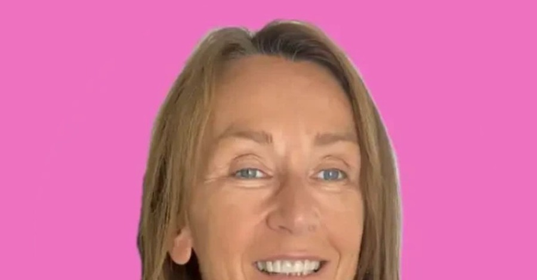
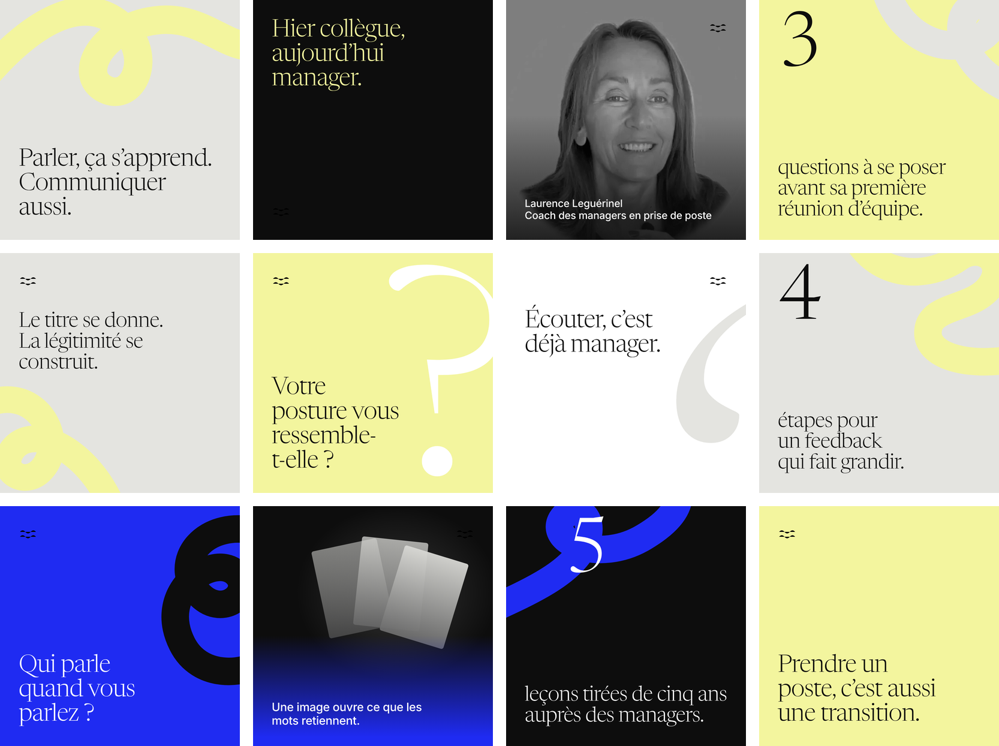

Une proposition de Studio Récitales pour Laurence Leguérinel.

Un espace de parole sur LinkedIn, puis en photo et en vidéo.
Depuis plus de cinq ans, vous accompagnez les managers en prise de poste. Vous les aidez à trouver une posture qui leur ressemble et une communication efficace.
Vous enseignez la communication. Votre propre parole, elle, reste discrète.
Confiez-nous le soin et la gestion de votre parole sur les réseaux. Nous voulons nous en occuper pour vous ainsi que de votre image dessus.
Du temps, une régularité et une forme visuelle. Des contenus que vous pouvez signer sans avoir à les écrire seule.
On commence par LinkedIn. Chaque semaine, nous écrivons pour vous deux publications à partir de vos sujets et de vos mots, et nous les mettons en forme. Vous les relisez, vous changez ce que vous voulez, puis nous les publions. Dans un second temps, on organise une séance photo et le tournage de courtes vidéos, pour qu’on puisse aussi vous voir et vous entendre.
Deux publications par semaine, le mardi et le jeudi. Chaque texte est écrit à la première personne.

Un entretien de trente minutes par mois. Nous enregistrons votre parole, nous en tirons les textes, vous validez.
Vous gardez la main sur chaque mot.
Aujourd’hui, une seule photo vous représente. Une séance de portraits donnera une image à chaque sujet.
Vous, filmée en train de poser les cartes Points of You® sur la table.